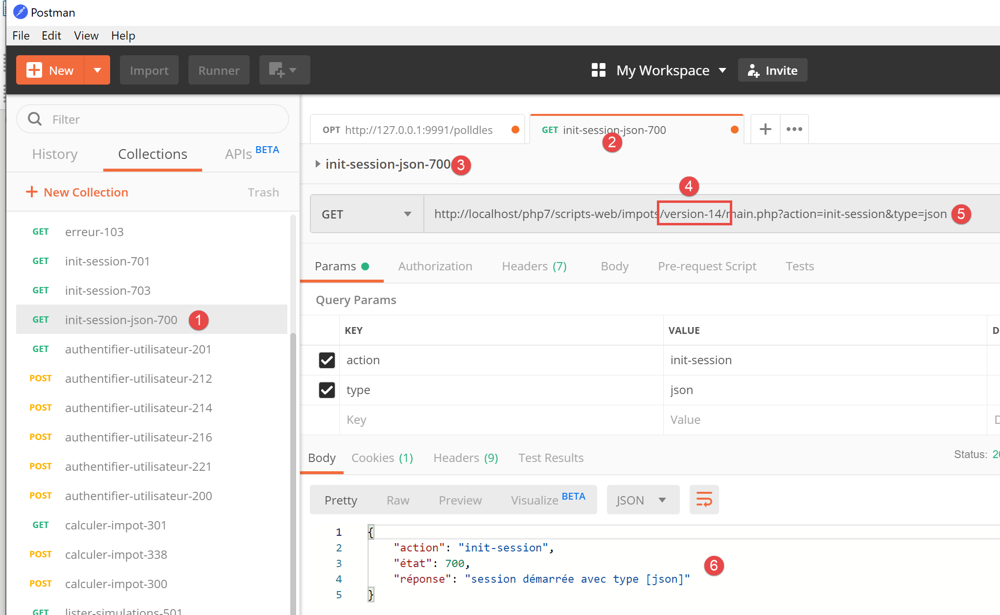

12. JavaScript HTTP functions

12.1. Choosing an HTTP library
We have chosen two libraries here:
ECMAScript 6 natively has an HTTP function called [fetch] that is not implemented by [node.js] (as of September 2019). There is a library called [node-fetch] that allows you to use the [fetch] function in Node. This library uses certain APIs specific to [node.js]. [node-fetch] code may therefore not be 100% portable to a non-[node] environment, such as a browser;
There is also a library called [axios] dedicated to HTTP requests that is compatible with both [node.js] and browsers. This is the library we will ultimately use.
We will present the same script written using both libraries to demonstrate that the coding approach is similar.
12.2. Setting up a development environment
12.2.1. Installing the tax calculation server
Ultimately, we will write a web application with the following architecture:

JS: JavaScript
The JavaScript code is client-side:
- from a service providing static pages or fragments;
- a JSON service;
The JavaScript code is therefore a JSON client and, as such, can be organized into layers [UI, business logic, DAO] (UI: User Interface) just like our JSON clients written in PHP.
The server will be the tax calculation server for which we have already written 13 versions. We are going to write a 14th one. We therefore begin by duplicating, in NetBeans, the version 13 folder into the version 14 folder:

- in [6], we modify the [config.json] file of version 14 as follows:
{
"databaseFilename": "Config/database.json",
"rootDirectory": "C:/myprograms/laragon-lite/www/php7/scripts-web/impots/version-14",
"relativeDependencies": [
"/Entities/BaseEntity.php",
"/Entities/Simulation.php",
...
"vues": {
"vue-authentification.php": [700, 221, 400],
"vue-calcul-impot.php": [200, 300, 341, 350, 800],
"vue-liste-simulations.php": [500, 600]
},
"vue-erreurs": "vue-erreurs.php"
}
- On line 3, we change the application's root directory;
To access this server, you must start the [Laragon] services.
Once this is done, we can test this new version of the server—which is currently identical to version 13—using [Postman] (see linked article). We can use the collection of requests used to test version 12 of the tax calculation server:

- in [1-4], use the [init-session-700] request to initialize a JSON session;
- in [4-5], replace [version-12] with [version-14] to test version 14 of the project;
- upon execution, we should receive the JSON response [6] from the server;
Version 14 of the server is now operational. We will need to modify it slightly. Let’s review this server’s API:
Action | Role | Execution Context |
init-session | Used to set the type (json, xml, html) of the desired responses | GET request main.php?action=init-session&type=x can be sent at any time |
authenticate-user | Authorizes or denies a user's login | POST request main.php?action=authenticate-user The request must have two posted parameters [user, password] Can only be issued if the session type (json, xml, html) is known |
calculate-tax | Performs a tax calculation simulation | POST request to main.php?action=calculate-tax The request must have three posted parameters [married, children, salary] Can only be issued if the session type (json, xml, html) is known and the user is authenticated |
list-simulations | Request to view the list of simulations performed since the start of the session | GET request main.php?action=list-simulations The request does not accept any other parameters Can only be issued if the session type (json, xml, html) is known and the user is authenticated |
delete-simulation | Deletes a simulation from the list of simulations | GET request main.php?action=list-simulations&number=x The request does not accept any other parameters Can only be issued if the session type (json, xml, html) is known and the user is authenticated |
end-session | Ends the simulation session. | Technically, the old web session is deleted and a new session is created Can only be issued if the session type (json, xml, html) is known and the user is authenticated |
12.2.2. Installation of the JavaScript client HTTP libraries
Initially, we will work with the following architecture:

- In [1], a console script [node.js] makes an HTTP request to the tax calculation JSON server;
- In [4], it receives this response and displays it in the console;
In Example 1, we will use the [node-fetch] and [axios] libraries, and then we will only keep [axios] for the following examples. We will now install these two JavaScript libraries from the [VSCode] terminal:

We will also use the [qs] library, which allows for URL encoding of a string. Recall that this encoding is used to encode the parameters of an HTTP GET or POST request.

12.3. script [fetch-01]
The [fetch-01] script uses the [node-fetch] library to initialize a JSON session with the tax calculation server. Its code is as follows:
'use strict';
// imports
import fetch from 'node-fetch';
import qs from 'qs';
import { sprintf } from 'sprintf-js';
import moment from 'moment';
// URL base of tax calculation server
const baseUrl = 'http://localhost/php7/scripts-web/impots/version-14/main.php?';
// init session
async function initSession() {
// query options HHTP [get /main.php?action=init-session&type=json]
const options = {
method: "GET",
timeout: 2000
};
// execute query HTTP [get /main.php?action=init-session&type=json]
let débutFetch;
try {
// asynchronous request - [fetch] makes a promise
débutFetch = moment(Date.now());
const response = await fetch(baseUrl + qs.stringify({
action: 'init-session',
type: 'json'
}), options);
// [response] is the entire HTTP response from the server (HTTP headers + response itself)
// display this answer to see its structure
console.log(sprintf("réponse fetch formatée en json,=%j, %s", response, heure(débutFetch)));
console.log("réponse fetch en javascript=", response);
// you can have HTTP headers
console.log("entêtes de la réponse=", response.headers);
// if application/json response, the server's json response is obtained with the asynchronous function [response.json()]
// in which case the calling code obtains a [Promise] object
// [await] allows you to obtain the server's [json] response rather than its promise
const débutJson = moment(Date.now());
const objet = await response.json();
console.log(sprintf("réponse json=%j, type=%s, %s", objet, typeof (objet), heure(débutJson)));
return objet;
// if text / plain, the text response from the server is obtained with [response.text()]
// in which case the calling code obtains a [Promise] object
// [await] allows you to obtain the server's [text] response rather than its promise
// const text = await response.text();
// console.log("answer text=", text);
// return text;
} catch (error) {
// we're here because the server has sent an error code [404 Not Found, ...] accompanied by an empty body - we display the error to see its structure
// or because the [fetch] client has thrown an exception (network inaccessible, ...)
// the error structure is displayed
console.log(sprintf("error fetch en json=%j, %s", error, heure(débutFetch)));
console.log("error fetch en javascript=", typeof (error), error);
// launch the error message received
throw error.message;
}
}
// the main function executes the asynchronous function [initSession]
async function main() {
try {
console.log("requête HTTP vers le serveur en cours ---------------------------------------------");
const response = await initSession();
console.log("succès ---------------------------------------------");
console.log("réponse=", response, typeof (response))
} catch (error) {
console.log("erreur ---------------------------------------------");
console.log("erreur=", error, typeof (error));
}
}
// test
main();
// time and duration display utility
function heure(début) {
// current time
const now = moment(Date.now());
// time formatting
let result = "heure=" + now.format("HH:mm:ss:SSS");
// is it necessary to calculate a duration?
if (début) {
const durée = now - début;
const milliseconds = durée % 1000;
const seconds = Math.floor(durée / 1000);
// format time + duration
result = result + sprintf(", durée= %s seconde(s) et %s millisecondes", seconds, milliseconds);
}
// result
return result;
}
Comments
- JavaScript HTTP functions are asynchronous functions. Here, we’re applying what we learned in the previous section (see link);
- line 24: to wait for the response from the asynchronous function [fetch] to be published on the [node.js] event loop, we use the keyword [await]. We know that this statement must be within code prefixed by the keyword [async] (line 13);
- lines 13–56: we encapsulate the HTTP code within the asynchronous function [initSession];
- lines 59–69: a second asynchronous function [main] is used to call the asynchronous function [initSession] in a blocking manner (async/await);
- line 72: the asynchronous function [main] is called;
- although the entire code resembles synchronous code, these are indeed asynchronous functions that are executed, but in a blocking manner;
- line 19: to initialize a JSON session with the tax calculation server, you must send it the HTTP request [get /main.php?action=init-session&type=json]. This is what the code in lines 24–27 does. The syntax for [fetch] is as follows: [fetch(URL, options)] with:
- [URL]: the URL being queried;
- [options]: an object defining the request options. This is where we define the HTTP headers we want to send to the target server;
- lines 15–18: we define the options for the request we want to make:
- [method]: we want to perform a GET;
- [timeout]: we want the [fetch] client to wait no more than 2 seconds for the server’s response. If this timeout is exceeded, [fetch] will throw an exception;
- line 24: to obtain the URL [/main.php?action=init-session&type=json], we use the [qs] library to get the URL-encoded parameters [action,type] of the GET request. The resulting string is [init-session&type=json], which we could have constructed ourselves. We simply wanted to demonstrate how to obtain a URL-encoded string;
- line 24: the keyword [await] indicates that an asynchronous task is being launched here and that we are waiting for it to publish its response on the [node.js] event loop;
- line 24: in [response], we get a complex object that describes the entire received HTTP response (headers and body);
- lines 30–31: We print the [response] object to see its structure, first as a string and then as a JavaScript object;
- line 33: we display the HTTP headers sent by the server;
- Line 38: We know that the tax calculation server will send a JSON string. This string is encapsulated in the [response] object. We can retrieve it using the [response.json()] method. However, this method is asynchronous. We therefore write [await response.json()] to retrieve the JSON string that will be published on the [node.js] event loop. In fact, it is not the JSON string itself that we obtain, but the JavaScript object represented by it;
- line 39: display of the received JSON string;
- line 40: returns the received JavaScript object;
- line 47: we catch any potential errors from the [fetch] statement. This statement only throws an exception if the HTTP operation failed and no response was received from the server. If a response was received, even with an HTTP status code other than [200 OK], [fetch] does not throw an exception, and the server response will be available on line 38;
- lines 51–52: the [error] object received by the [catch] clause is displayed, first as a JSON string and then as a JavaScript object;
- line 54: the error message from [fetch] is stored in [error.message];
- lines 59–69: the asynchronous function [main] calls the asynchronous function [initSession] in a blocking manner (await on line 62);
- line 72: the asynchronous function [main] is launched, and the main script code is then complete. The overall script will finish when the launched asynchronous tasks have published their results to the event loop;
The results of the execution are as follows:
Case 1: the Laragon server is not running
[Running] C:\myprograms\laragon-lite\bin\nodejs\node-v10\node.exe -r esm "c:\Data\st-2019\dev\es6\javascript\http\fetch-01.js"
requête HTTP vers le serveur en cours ---------------------------------------------
error fetch en json={"message":"network timeout at: http://localhost/php7/scripts-web/impots/version-14/main.php?action=init-session&type=json","type":"request-timeout"}, heure=10:08:48:180, durée= 2 seconde(s) et 62 millisecondes
error fetch en javascript= object { FetchError: network timeout at: http://localhost/php7/scripts-web/impots/version-14/main.php?action=init-session&type=json
at Timeout.<anonymous> (c:\Data\st-2019\dev\es6\javascript\node_modules\node-fetch\lib\index.js:1448:13)
at ontimeout (timers.js:436:11)
at tryOnTimeout (timers.js:300:5)
at listOnTimeout (timers.js:263:5)
at Timer.processTimers (timers.js:223:10)
message:
'network timeout at: http://localhost/php7/scripts-web/impots/version-14/main.php?action=init-session&type=json',
type: 'request-timeout' }
erreur ---------------------------------------------
erreur= network timeout at: http://localhost/php7/scripts-web/impots/version-14/main.php?action=init-session&type=json string
[Done] exited with code=0 in 2.804 seconds
Comments
- line 3: the HTTP request fails after 2 seconds and 62 milliseconds due to the 2-second timeout imposed on the HTTP request;
- lines 4–9: the JavaScript [error] object intercepted by the [catch(error)] clause. This object has two properties:
- [FetchError]: line 4;
- [message]: lines 10–12;
- line 14: the error message received by the asynchronous function [main];
Case 2: The Laragon server is running
[Running] C:\myprograms\laragon-lite\bin\nodejs\node-v10\node.exe -r esm "c:\Data\st-2019\dev\es6\javascript\http\fetch-01.js"
requête HTTP vers le serveur en cours ---------------------------------------------
réponse fetch formatée en json,={"size":0,"timeout":2000}, heure=10:13:50:814, durée= 0 seconde(s) et 375 millisecondes
réponse fetch en javascript= Response {
size: 0,
timeout: 2000,
[Symbol(Body internals)]:
{ body:
PassThrough {
_readableState: [ReadableState],
readable: true,
domain: null,
_events: [Object],
_eventsCount: 2,
_maxListeners: undefined,
_writableState: [WritableState],
writable: false,
allowHalfOpen: true,
_transformState: [Object] },
disturbed: false,
error: null },
[Symbol(Response internals)]:
{ url:
'http://localhost/php7/scripts-web/impots/version-14/main.php?action=init-session&type=json',
status: 200,
statusText: 'OK',
headers: Headers { [Symbol(map)]: [Object] },
counter: 0 } }
entêtes de la réponse= Headers {
[Symbol(map)]:
[Object: null prototype] {
date: [ 'Sat, 14 Sep 2019 08:13:50 GMT' ],
server: [ 'Apache/2.4.35 (Win64) OpenSSL/1.1.0i PHP/7.2.11' ],
'x-powered-by': [ 'PHP/7.2.11' ],
'cache-control': [ 'max-age=0, private, must-revalidate, no-cache, private' ],
'set-cookie': [ 'PHPSESSID=99q2iinusmhl55fa600aie2mmu; path=/' ],
'content-length': [ '86' ],
connection: [ 'close' ],
'content-type': [ 'application/json' ] } }
réponse json={"action":"init-session","état":700,"réponse":"session démarrée avec type [json]"}, type=object, heure=10:13:50:825, durée= 0 seconde(s) et 1 millisecondes
succès ---------------------------------------------
réponse= { action: 'init-session',
'état': 700,
'réponse': 'session démarrée avec type [json]' } object
[Done] exited with code=0 in 1.022 seconds
Comments
- line 3: [fetch] receives the server response after 375 ms;
- lines 4–39: the structure of the JavaScript object [response] encapsulating the server’s response. Among its properties, some may be of interest to us:
- [status] (line 25): HTTP status code of the server's response;
- [statusText] (line 26): text associated with this code;
- [headers] (line 27): the HTTP headers of the server’s response;
- [body] (line 8): represents the document sent by the server. The [fetch] statement provides methods to work with it;
- lines 29–39: the HTTP headers of the server’s response;
- line 40: the asynchronous function [response.json()] returned its response after 1 millisecond;
- lines 42–44: the JavaScript object received by the asynchronous function [main];
Case 3: The Laragon server is running, but an incorrect command is sent to it:

- above, line 26, an incorrect session type is passed to the server;
The results of the execution are as follows:
requête HTTP vers le serveur en cours ---------------------------------------------
réponse fetch formatée en json,={"size":0,"timeout":2000}, heure=10:27:54:114, durée= 0 seconde(s) et 136 millisecondes
réponse fetch en javascript= Response {
size: 0,
timeout: 2000,
[Symbol(Body internals)]:
{ body:
PassThrough {
_readableState: [ReadableState],
readable: true,
domain: null,
_events: [Object],
_eventsCount: 2,
_maxListeners: undefined,
_writableState: [WritableState],
writable: false,
allowHalfOpen: true,
_transformState: [Object] },
disturbed: false,
error: null },
[Symbol(Response internals)]:
{ url:
'http://localhost/php7/scripts-web/impots/version-14/main.php?action=init-session&type=x',
status: 400,
statusText: 'Bad Request',
headers: Headers { [Symbol(map)]: [Object] },
counter: 0 } }
entêtes de la réponse= Headers {
[Symbol(map)]:
[Object: null prototype] {
date: [ 'Sat, 14 Sep 2019 08:27:54 GMT' ],
server: [ 'Apache/2.4.35 (Win64) OpenSSL/1.1.0i PHP/7.2.11' ],
'x-powered-by': [ 'PHP/7.2.11' ],
'cache-control': [ 'max-age=0, private, must-revalidate, no-cache, private' ],
'set-cookie': [ 'PHPSESSID=5ku9gfok81ikj98hia0meeum57; path=/' ],
'content-length': [ '79' ],
connection: [ 'close' ],
'content-type': [ 'application/json' ] } }
réponse json={"action":"init-session","état":703,"réponse":"paramètre type=[x] invalide"}, type=object, heure=10:27:54:127, durée= 0 seconde(s) et 2 millisecondes
succès ---------------------------------------------
réponse= { action: 'init-session',
'état': 703,
'réponse': 'paramètre type=[x] invalide' } object
[Done] exited with code=0 in 0.712 seconds
- The server response is received on line 2;
- line 24: we can see that the HTTP status code of the server response is 400, an error code. However, [fetch] did not throw an exception. As long as [fetch] receives a response from the server, it processes it and does not throw an exception;
- lines 41–43: the response obtained by the asynchronous function [main];
12.4. script [fetch-02]
The following script reuses the [fetch-01] script while stripping away all unnecessary details:
'use strict';
// imports
import fetch from 'node-fetch';
import qs from 'qs';
// URL base of tax calculation server
const baseUrl = 'http://localhost/php7/scripts-web/impots/version-14/main.php?';
// init session
async function initSession() {
// query options HHTP [get /main.php?action=init-session&type=json]
const options = {
method: "GET",
timeout: 2000
};
// execute query HTTP [get /main.php?action=init-session&type=json]
const response = await fetch(baseUrl + qs.stringify({
action: 'init-session',
type: 'json'
}), options);
// result received in jSON
return await response.json();
}
// the main function executes the asynchronous function [initSession]
async function main() {
try {
console.log("requête HTTP vers le serveur en cours ---------------------------------------------");
const response = await initSession();
console.log("succès ---------------------------------------------");
console.log("réponse=", response)
} catch (error) {
console.log("erreur ---------------------------------------------");
console.log("erreur=", error.message);
}
}
// test
main();
Results of a normal execution:
[Running] C:\myprograms\laragon-lite\bin\nodejs\node-v10\node.exe -r esm "c:\Data\st-2019\dev\es6\javascript\http\fetch-02.js"
requête HTTP vers le serveur en cours ---------------------------------------------
succès ---------------------------------------------
réponse= { action: 'init-session',
'état': 700,
'réponse': 'session démarrée avec type [json]' }
[Done] exited with code=0 in 0.56 seconds
Results of an execution with an exception (stopping the Laragon server):
[Running] C:\myprograms\laragon-lite\bin\nodejs\node-v10\node.exe -r esm "c:\Data\st-2019\dev\es6\javascript\http\fetch-02.js"
requête HTTP vers le serveur en cours ---------------------------------------------
erreur ---------------------------------------------
erreur= network timeout at: http://localhost/php7/scripts-web/impots/version-14/main.php?action=init-session&type=json
[Done] exited with code=0 in 2.701 seconds
12.5. script [axios-01]
Here we revisit the [fetch-01] script, which we rewrite using the [axios] library. As a reminder, our interest in this library lies in its portability between the [node.js] environment and common browsers. This allows:
- In Phase 1, test our scripts in a [Node.js] environment;
- in phase 2, to port them to a browser;
The [axios-01] script follows the structure of the [fetch-01] script:
'use strict';
import axios from 'axios';
// axios default configuration
axios.defaults.timeout = 2000;
axios.defaults.baseURL = 'http://localhost/php7/scripts-web/impots/version-14';
// init session
async function initSession(axios) {
// query options HHTP [get /main.php?action=init-session&type=json]
const options = {
method: "GET",
// URL parameters
params: {
action: 'init-session',
type: 'json'
}
};
// execute query HTTP [get /main.php?action=init-session&type=json]
try {
// asynchronous request
const response = await axios.request('main.php', options);
// response is the entire HTTP response from the server (HTTP headers + response itself)
// display this answer to see its structure
console.log("réponse axios=", response);
// the server response is in [response.data]
return response.data;
} catch (error) {
// we're here because the server has sent an error code [404 Not Found, 500 Internal Server Error, ...]
// the [error] parameter is an exception instance - it can take various forms
// display it to see its structure
console.log("axios error=", typeof (error), error);
if (error.response) {
// the server reported an error in status HTTP but also sent a response
// then it is found in [error.response.data]
// we know that the server sends jSON responses with structure {action, status, response}
// and that in the event of an error, the error msg is in [reply]
return error.response.data;
} else {
// we launch the error
throw error;
}
}
}
// the main function executes the asynchronous function [initSession]
async function main() {
try {
console.log("requête HTTP vers le serveur en cours ---------------------------------------------");
const response = await initSession(axios);
console.log("succès ---------------------------------------------");
console.log("réponse=", response, typeof (response))
} catch (error) {
console.log("erreur ---------------------------------------------");
console.log("erreur=", error.message);
}
}
// test
main();
Comments
- line 2: we import the [axios] library;
- lines 5-6: default configuration for HTTP requests. The [axios.defaults] options apply to all HTTP requests sent by the [axios] object without needing to be specified for each new request;
- line 5: 2-second timeout for all requests;
- line 6: all URLs will be relative to the base URL;
- line 9: the asynchronous [initSession] function;
- lines 11–18: the options for the HTTP request to be sent (in addition to the default options already defined in lines 5–6);
- lines 14–17: the URL parameters [action=init-session&type=json]. The [params] object will be automatically converted to a URL-encoded string;
- line 22: blocking call to the asynchronous function [axios.request]. The first parameter is the target URL constructed as [main.php] appended to the base URL defined on line 6. The second parameter is the [options] object from lines 11–18;
- line 25: [response] is a JavaScript object encapsulating the entire HTTP response from the server (HTTP headers + response body). We display it to see its JavaScript structure;
- line 27: if the server sent a document, then it is found in [response.data]. Here we know that the server sends a JSON response accompanied by the HTTP header [Content-type: application/json]. The presence of this header causes [axios] to automatically deserialize [response.data] into a JavaScript object;
- line 28: the [axios] function can throw an exception. This is where [axios] differs from [fetch]. An exception is thrown in the following cases:
- the HTTP request could not be sent (client-side error);
- the server sent an HTTP error code (400, 404, 500, …) (this behavior is actually configurable). Note that if this HTTP status code is accompanied by a response, [fetch] did not throw an exception, whereas [axios] does. However, if the HTTP error code is accompanied by a document, it is placed in [error.response];
- line 32: we display the JavaScript structure of the [error] object;
- lines 33–38: if the [error] object contains a [response] object, then this response is returned to the calling code;
- lines 39–42: in all other cases, the [error] object is passed back to the calling code;
- lines 47–57: the asynchronous function [main];
- line 50: blocking call to the asynchronous function [initSession]. The JSON response from the server is retrieved as a JavaScript object;
- lines 53–56: handling any errors. The error message is in [error.message];
The results of the execution are as follows:
Case 1: The Laragon server is not running
[Running] C:\myprograms\laragon-lite\bin\nodejs\node-v10\node.exe -r esm "c:\Data\st-2019\dev\es6\javascript\http\axios-01.js"
requête HTTP vers le serveur en cours ---------------------------------------------
axios error= object { Error: timeout of 2000ms exceeded
at createError (c:\Data\st-2019\dev\es6\javascript\node_modules\axios\lib\core\createError.js:16:15)
at Timeout.handleRequestTimeout (c:\Data\st-2019\dev\es6\javascript\node_modules\axios\lib\adapters\http.js:252:16)
at ontimeout (timers.js:436:11)
at tryOnTimeout (timers.js:300:5)
at listOnTimeout (timers.js:263:5)
at Timer.processTimers (timers.js:223:10)
config:
{ url:
'http://localhost/php7/scripts-web/impots/version-14/main.php',
method: 'get',
params: { action: 'init-session', type: 'json' },
headers:
{ Accept: 'application/json, text/plain, */*',
'User-Agent': 'axios/0.19.0' },
baseURL: 'http://localhost/php7/scripts-web/impots/version-14',
transformRequest: [ [Function: transformRequest] ],
transformResponse: [ [Function: transformResponse] ],
timeout: 2000,
adapter: [Function: httpAdapter],
xsrfCookieName: 'XSRF-TOKEN',
xsrfHeaderName: 'X-XSRF-TOKEN',
maxContentLength: -1,
validateStatus: [Function: validateStatus],
data: undefined },
code: 'ECONNABORTED',
request:
Writable {
_writableState:
WritableState {
objectMode: false,
highWaterMark: 16384,
finalCalled: false,
needDrain: false,
ending: false,
ended: false,
finished: false,
destroyed: false,
decodeStrings: true,
defaultEncoding: 'utf8',
length: 0,
writing: false,
corked: 0,
sync: true,
bufferProcessing: false,
onwrite: [Function: bound onwrite],
writecb: null,
writelen: 0,
bufferedRequest: null,
lastBufferedRequest: null,
pendingcb: 0,
prefinished: false,
errorEmitted: false,
emitClose: true,
bufferedRequestCount: 0,
corkedRequestsFree: [Object] },
writable: true,
domain: null,
_events:
[Object: null prototype] {
response: [Function: handleResponse],
error: [Function: handleRequestError] },
_eventsCount: 2,
_maxListeners: undefined,
_options:
{ protocol: 'http:',
maxRedirects: 21,
maxBodyLength: 10485760,
path:
'/php7/scripts-web/impots/version-14/main.php?action=init-session&type=json',
method: 'GET',
headers: [Object],
agent: undefined,
auth: undefined,
hostname: 'localhost',
port: null,
nativeProtocols: [Object],
pathname: '/php7/scripts-web/impots/version-14/main.php',
search: '?action=init-session&type=json' },
_redirectCount: 0,
_redirects: [],
_requestBodyLength: 0,
_requestBodyBuffers: [],
_onNativeResponse: [Function],
_currentRequest:
ClientRequest {
domain: null,
_events: [Object],
_eventsCount: 6,
_maxListeners: undefined,
output: [],
outputEncodings: [],
outputCallbacks: [],
outputSize: 0,
writable: true,
_last: true,
chunkedEncoding: false,
shouldKeepAlive: false,
useChunkedEncodingByDefault: false,
sendDate: false,
_removedConnection: false,
_removedContLen: false,
_removedTE: false,
_contentLength: 0,
_hasBody: true,
_trailer: '',
finished: true,
_headerSent: true,
socket: [Socket],
connection: [Socket],
_header:
'GET /php7/scripts-web/impots/version-14/main.php?action=init-session&type=json HTTP/1.1\r\nAccept: application/json, text/plain, */*\r\nUser-Agent: axios/0.19.0\r\nHost: localhost\r\nConnection: close\r\n\r\n',
_onPendingData: [Function: noopPendingOutput],
agent: [Agent],
socketPath: undefined,
timeout: undefined,
method: 'GET',
path:
'/php7/scripts-web/impots/version-14/main.php?action=init-session&type=json',
_ended: false,
res: null,
aborted: 1568528450762,
timeoutCb: null,
upgradeOrConnect: false,
parser: [HTTPParser],
maxHeadersCount: null,
_redirectable: [Circular],
[Symbol(isCorked)]: false,
[Symbol(outHeadersKey)]: [Object] },
_currentUrl:
'http://localhost/php7/scripts-web/impots/version-14/main.php?action=init-session&type=json' },
response: undefined,
isAxiosError: true,
toJSON: [Function] }
erreur ---------------------------------------------
erreur= timeout of 2000ms exceeded
[Done] exited with code=0 in 2.784 seconds
Comments
- lines 33-136: the [error] object contains a lot of information;
- [Error], lines 3-9: a description of the error that occurred;
- [config], lines 10–27: the configuration of the HTTP request that led to this error;
- [config.url], lines 11–12: the target URL;
- [config.method], line 13: request method;
- [config.params], line 14: the URL parameters;
- [config.headers], lines 16–17: the HTTP headers of the request;
- [config.baseURL], line 18: the base URL of the target URL;
- [config.timeout], line 21: the request timeout;
- [code], line 28: an error code;
- [request], lines 29–133: a detailed description of the HTTP request. Note that most properties are prefixed with an underscore (_), indicating that they are internal properties of the [request] object not intended to be used directly by the developer;
- [response], line 134: the server response, which is empty here;
- line 138: the error message displayed by the [main] function;
Case 2: The Laragon server is running
[Running] C:\myprograms\laragon-lite\bin\nodejs\node-v10\node.exe -r esm "c:\Data\st-2019\dev\es6\javascript\http\axios-01.js"
requête HTTP vers le serveur en cours ---------------------------------------------
réponse axios= { status: 200,
statusText: 'OK',
headers:
{ date: 'Sun, 15 Sep 2019 07:09:26 GMT',
server: 'Apache/2.4.35 (Win64) OpenSSL/1.1.0i PHP/7.2.11',
'x-powered-by': 'PHP/7.2.11',
'cache-control': 'max-age=0, private, must-revalidate, no-cache, private',
'set-cookie': [ 'PHPSESSID=uas6lugtblstktcifpd8e5irm6; path=/' ],
'content-length': '86',
connection: 'close',
'content-type': 'application/json' },
config:
{ url:
'http://localhost/php7/scripts-web/impots/version-14/main.php',
method: 'get',
params: { action: 'init-session', type: 'json' },
headers:
{ Accept: 'application/json, text/plain, */*',
'User-Agent': 'axios/0.19.0' },
baseURL: 'http://localhost/php7/scripts-web/impots/version-14',
transformRequest: [ [Function: transformRequest] ],
transformResponse: [ [Function: transformResponse] ],
timeout: 2000,
adapter: [Function: httpAdapter],
xsrfCookieName: 'XSRF-TOKEN',
xsrfHeaderName: 'X-XSRF-TOKEN',
maxContentLength: -1,
validateStatus: [Function: validateStatus],
data: undefined },
request:
ClientRequest {
domain: null,
_events:
[Object: null prototype] {
socket: [Function],
abort: [Function],
aborted: [Function],
error: [Function],
timeout: [Function],
prefinish: [Function: requestOnPrefinish] },
_eventsCount: 6,
_maxListeners: undefined,
output: [],
outputEncodings: [],
outputCallbacks: [],
outputSize: 0,
writable: true,
_last: true,
chunkedEncoding: false,
shouldKeepAlive: false,
useChunkedEncodingByDefault: false,
sendDate: false,
_removedConnection: false,
_removedContLen: false,
_removedTE: false,
_contentLength: 0,
_hasBody: true,
_trailer: '',
finished: true,
_headerSent: true,
socket:
Socket {
connecting: false,
_hadError: false,
_handle: [TCP],
_parent: null,
_host: 'localhost',
_readableState: [ReadableState],
readable: true,
domain: null,
_events: [Object],
_eventsCount: 7,
_maxListeners: undefined,
_writableState: [WritableState],
writable: false,
allowHalfOpen: false,
_sockname: null,
_pendingData: null,
_pendingEncoding: '',
server: null,
_server: null,
parser: null,
_httpMessage: [Circular],
[Symbol(asyncId)]: 6,
[Symbol(lastWriteQueueSize)]: 0,
[Symbol(timeout)]: null,
[Symbol(kBytesRead)]: 0,
[Symbol(kBytesWritten)]: 0 },
connection:
Socket {
connecting: false,
_hadError: false,
_handle: [TCP],
_parent: null,
_host: 'localhost',
_readableState: [ReadableState],
readable: true,
domain: null,
_events: [Object],
_eventsCount: 7,
_maxListeners: undefined,
_writableState: [WritableState],
writable: false,
allowHalfOpen: false,
_sockname: null,
_pendingData: null,
_pendingEncoding: '',
server: null,
_server: null,
parser: null,
_httpMessage: [Circular],
[Symbol(asyncId)]: 6,
[Symbol(lastWriteQueueSize)]: 0,
[Symbol(timeout)]: null,
[Symbol(kBytesRead)]: 0,
[Symbol(kBytesWritten)]: 0 },
_header:
'GET /php7/scripts-web/impots/version-14/main.php?action=init-session&type=json HTTP/1.1\r\nAccept: application/json, text/plain, */*\r\nUser-Agent: axios/0.19.0\r\nHost: localhost\r\nConnection: close\r\n\r\n',
_onPendingData: [Function: noopPendingOutput],
agent:
Agent {
domain: null,
_events: [Object],
_eventsCount: 1,
_maxListeners: undefined,
defaultPort: 80,
protocol: 'http:',
options: [Object],
requests: {},
sockets: [Object],
freeSockets: {},
keepAliveMsecs: 1000,
keepAlive: false,
maxSockets: Infinity,
maxFreeSockets: 256 },
socketPath: undefined,
timeout: undefined,
method: 'GET',
path:
'/php7/scripts-web/impots/version-14/main.php?action=init-session&type=json',
_ended: true,
res:
IncomingMessage {
_readableState: [ReadableState],
readable: false,
domain: null,
_events: [Object],
_eventsCount: 3,
_maxListeners: undefined,
socket: [Socket],
connection: [Socket],
httpVersionMajor: 1,
httpVersionMinor: 0,
httpVersion: '1.0',
complete: true,
headers: [Object],
rawHeaders: [Array],
trailers: {},
rawTrailers: [],
aborted: false,
upgrade: false,
url: '',
method: null,
statusCode: 200,
statusMessage: 'OK',
client: [Socket],
_consuming: false,
_dumped: false,
req: [Circular],
responseUrl:
'http://localhost/php7/scripts-web/impots/version-14/main.php?action=init-session&type=json',
redirects: [] },
aborted: undefined,
timeoutCb: null,
upgradeOrConnect: false,
parser: null,
maxHeadersCount: null,
_redirectable:
Writable {
_writableState: [WritableState],
writable: true,
domain: null,
_events: [Object],
_eventsCount: 2,
_maxListeners: undefined,
_options: [Object],
_redirectCount: 0,
_redirects: [],
_requestBodyLength: 0,
_requestBodyBuffers: [],
_onNativeResponse: [Function],
_currentRequest: [Circular],
_currentUrl:
'http://localhost/php7/scripts-web/impots/version-14/main.php?action=init-session&type=json' },
[Symbol(isCorked)]: false,
[Symbol(outHeadersKey)]:
[Object: null prototype] { accept: [Array], 'user-agent': [Array], host: [Array] } },
data:
{ action: 'init-session',
'état': 700,
'réponse': 'session démarrée avec type [json]' } }
succès ---------------------------------------------
réponse= { action: 'init-session',
'état': 700,
'réponse': 'session démarrée avec type [json]' } object
[Done] exited with code=0 in 1.115 seconds
Comments
- lines 3–203: the JavaScript object [response] that encapsulates the server’s HTTP response;
- line 3, [status]: the HTTP status code of the response;
- line 4, [statusText]: the text associated with the previous HTTP status code;
- lines 5-13, [headers]: the HTTP headers of the response:
- line 10, [Set-Cookie]: the session cookie;
- line 13, [Content-Type]: the type of document sent by the server;
- lines 14–31, [config]: the configuration of the HTTP request sent;
- lines 32–199, [request]: the JavaScript object detailing the HTTP request sent;
- lines 200–203, [request.data]: the JavaScript object encapsulating the server’s JSON response;
- lines 205–207: the response retrieved by the asynchronous function [main];
Case 3: An incorrect [init-session] request is sent to the Laragon server;

The execution results are as follows:
[Running] C:\myprograms\laragon-lite\bin\nodejs\node-v10\node.exe -r esm "c:\Data\st-2019\dev\es6\javascript\http\axios-01.js"
requête HTTP vers le serveur en cours ---------------------------------------------
axios error= object { Error: Request failed with status code 400
...
config:
{ url:
'http://localhost/php7/scripts-web/impots/version-14/main.php',
...
data: undefined },
request:
...
[Symbol(outHeadersKey)]:
[Object: null prototype] { accept: [Array], 'user-agent': [Array], host: [Array] } },
response:
{ status: 400,
statusText: 'Bad Request',
headers:
{ date: 'Sun, 15 Sep 2019 07:25:58 GMT',
server: 'Apache/2.4.35 (Win64) OpenSSL/1.1.0i PHP/7.2.11',
'x-powered-by': 'PHP/7.2.11',
'cache-control': 'max-age=0, private, must-revalidate, no-cache, private',
'set-cookie': [Array],
'content-length': '79',
connection: 'close',
'content-type': 'application/json' },
config:
{ url:
'http://localhost/php7/scripts-web/impots/version-14/main.php',
...
data: undefined },
request:
...
[Symbol(outHeadersKey)]: [Object] },
data:
{ action: 'init-session',
'état': 703,
'réponse': 'paramètre type=[x] invalide' } },
isAxiosError: true,
toJSON: [Function] }
succès ---------------------------------------------
réponse= { action: 'init-session',
'état': 703,
'réponse': 'paramètre type=[x] invalide' } object
[Done] exited with code=0 in 0.69 seconds
Because the server responded with an HTTP 400 code (line 15), [axios] threw an exception (again, this behavior is configurable). Although [axios] threw an exception, we still get the HTTP response from the server in [error.response] (line 14) and the sent JSON document in [error.response.data] (line 34). Lines 41–43: the [main] function correctly retrieves the JSON response from the server.
12.6. script [axios-02]
Now that we have detailed the objects handled by the [axios] library during an HTTP request, we can rewrite the [axios-01] script as follows:
'use strict';
import axios from 'axios';
// axios default configuration
axios.defaults.timeout = 2000;
axios.defaults.baseURL = 'http://localhost/php7/scripts-web/impots/version-14';
// init session
async function initSession(axios) {
// query options HHTP [get /main.php?action=init-session&type=json]
const options = {
method: "GET",
// URL parameters
params: {
action: 'init-session',
type: 'json'
}
};
try {
// execute query HTTP [get /main.php?action=init-session&type=json]
const response = await axios.request('main.php', options);
// the server response is in [response.data]
return response.data;
} catch (error) {
// server response
if (error.response) {
// the answer jSON is in [error.response.data]
return error.response.data;
} else {
// error restart
throw error;
}
}
}
// the main function executes the asynchronous function [initSession]
async function main() {
try {
console.log("requête HTTP vers le serveur en cours ---------------------------------------------");
const response = await initSession(axios);
console.log("succès ---------------------------------------------");
console.log("réponse=", response, typeof (response))
} catch (error) {
console.log("erreur ---------------------------------------------");
console.log("erreur=", error.message);
}
}
// test
main();
12.7. script [axios-03]
The [axios-03] script follows the same methodology as the [axios-02] script. This time, we add the [authenticate-user] HTTP request to the server, which is made using a POST request:
'use strict';
import axios from 'axios';
import qs from 'qs'
// axios configuration
axios.defaults.timeout = 2000;
axios.defaults.baseURL = 'http://localhost/php7/scripts-web/impots/version-14';
// init session
async function initSession(axios) {
// query options HHTP [get /main.php?action=init-session&type=json]
const options = {
method: "GET",
// URL parameters
params: {
action: 'init-session',
type: 'json'
}
};
try {
// execute query HTTP [get /main.php?action=init-session&type=json]
const response = await axios.request('main.php', options);
// the server response is in [response.data]
return response.data;
} catch (error) {
// server response
if (error.response) {
// the answer jSON is in [error.response.data]
return error.response.data;
} else {
// error restart
throw error;
}
}
}
async function authentifierUtilisateur(axios, user, password) {
// query options HHTP [POST /main.php?action=authenticate-user]
const options = {
method: "POST",
headers: {
'Content-type': 'application/x-www-form-urlencoded',
},
// body of POST
data: qs.stringify({
user: user,
password: password
}),
// URL parameters
params: {
action: 'authentifier-utilisateur'
}
};
try {
// execute query HTTP [post /main.php?action=authenticate-user]
const response = await axios.request('main.php', options);
// the server response is in [response.data]
return response.data;
} catch (error) {
// server response
if (error.response) {
// the answer jSON is in [error.response.data]
return error.response.data;
} else {
// error restart
throw error;
}
}
}
// the main function executes asynchronous functions one by one
async function main() {
try {
// init-session
console.log("action init-session en cours ---------------------------------------------");
const response1 = await initSession(axios);
console.log("succès ---------------------------------------------");
console.log("réponse=", response1);
// authenticate-user
console.log("action authentifier-utilisateur en cours ---------------------------------------------");
const response2 = await authentifierUtilisateur(axios, 'admin', 'admin');
console.log("succès ---------------------------------------------");
console.log("réponse=", response2)
} catch (error) {
console.log("erreur ---------------------------------------------");
console.log("erreur=", error);
}
}
// test
main();
Comments
- lines 38-70: the asynchronous function [authenticateUser];
- line 39: the request must be made [POST /main.php?action=authenticate-user];
- lines 40–54: the HTTP request options;
- line 41: this is a POST request;
- lines 42–44: the POST parameters will be URL-encoded in a document that the client sends with its request;
- lines 46–49: the [data] property must contain the URL-encoded POST string. To do this, we use the [qs] library imported on line 3;
- lines 55–69: to execute the request, we use the same code as in the [initSession] method;
- lines 73–89: the [asynchrone] method successively calls the [initSession] and [authentifierUtilisateur] methods in a blocking manner, lines 77 and 82;
- line 82: the pair (admin, admin) is used as the login credentials. We know that they are recognized by the server;
The results of the execution are as follows:
[Running] C:\myprograms\laragon-lite\bin\nodejs\node-v10\node.exe -r esm "c:\Data\st-2019\dev\es6\javascript\http\axios-03.js"
action init-session en cours ---------------------------------------------
succès ---------------------------------------------
réponse= { action: 'init-session',
'état': 700,
'réponse': 'session démarrée avec type [json]' }
action authentifier-utilisateur en cours ---------------------------------------------
succès ---------------------------------------------
réponse= { action: 'authentifier-utilisateur',
'état': 103,
'réponse':
[ 'pas de session en cours. Commencer par action [init-session]' ] }
[Done] exited with code=0 in 0.834 seconds
- lines 9-12: user authentication fails: the server did not retain the fact that a JSON session had been initiated. This is because the session cookie sent in response to the first [init-session] request was not sent back;
12.8. script [axios-04]
The [axios-04] script introduces two improvements to the [axios-03] script:
- it handles the session cookie;
- it factors into a [getRemoteData] function what is common to the [initSession] and [authenticateUser] functions;
'use strict';
import axios from 'axios';
import qs from 'qs'
// axios configuration
axios.defaults.timeout = 2000;
axios.defaults.baseURL = 'http://localhost/php7/scripts-web/impots/version-14';
// session cookie
const sessionCookieName = "PHPSESSID";
let sessionCookie = '';
// init session
async function initSession(axios) {
// query options HHTP [get /main.php?action=init-session&type=json]
const options = {
method: "GET",
// URL parameters
params: {
action: 'init-session',
type: 'json'
}
};
// execute query HTTP
return await getRemoteData(axios, options);
}
async function authentifierUtilisateur(axios, user, password) {
// query options HHTP [post /main.php?action=authenticate-user]
const options = {
method: "POST",
headers: {
'Content-type': 'application/x-www-form-urlencoded',
},
// body of POST
data: qs.stringify({
user: user,
password: password
}),
// URL parameters
params: {
action: 'authentifier-utilisateur'
}
};
// execute query HTTP
return await getRemoteData(axios, options);
}
async function getRemoteData(axios, options) {
// for the session cookie
if (!options.headers) {
options.headers = {};
}
options.headers.Cookie = sessionCookie;
// execute query HTTP
let response;
try {
// asynchronous request
response = await axios.request('main.php', options);
} catch (error) {
// the [error] parameter is an exception instance - it can take various forms
if (error.response) {
// the server response is in [error.response]
response = error.response;
} else {
// error restart
throw error;
}
}
// response is the entire HTTP response from the server (HTTP headers + response itself)
// retrieve the session cookie if it exists
const setCookie = response.headers['set-cookie'];
if (setCookie) {
// setCookie is an array
// look for the session cookie in this table
let trouvé = false;
let i = 0;
while (!trouvé && i < setCookie.length) {
// look for the session cookie
const results = RegExp('^(' + sessionCookieName + '.+?);').exec(setCookie[i]);
if (results) {
// the session cookie is stored
// eslint-disable-next-line require-atomic-updates
sessionCookie = results[1];
// we found
trouvé = true;
} else {
// next item
i++;
}
}
}
// the server response is in [response.data]
return response.data;
}
// the main function executes asynchronous functions one by one
async function main() {
try {
// init-session
console.log("action init-session en cours ---------------------------------------------");
const response1 = await initSession(axios);
console.log("succès ---------------------------------------------");
console.log("réponse=", response1);
// authenticate-user
console.log("action authentifier-utilisateur en cours ---------------------------------------------");
const response2 = await authentifierUtilisateur(axios, 'admin', 'admin');
console.log("succès ---------------------------------------------");
console.log("réponse=", response2)
} catch (error) {
console.log("erreur ---------------------------------------------");
console.log("erreur=", error.message);
}
}
// test
main();
Comments
- lines 14–26: the [initSession] function. It now simply prepares the HTTP request to be sent to the server but does not execute it. It delegates this task to the [getRemoteDate] method in lines 49–95;
- lines 28–47: the [authentifierUtilisateur] function follows the same procedure;
- line 49: the [getRemoteData] function receives the two pieces of information it needs to execute an HTTP request:
- [axios], the object responsible for sending the request and receiving the response;
- [options], the configuration options for the request to be sent to the server;
- line 59: executing the request and waiting for its JSON response;
- lines 60–68: handling any exceptions;
- line 64: retrieve the response, which may be encapsulated in the error object;
- line 67: if the server threw an exception without including the server response, then the received error is propagated to the calling code;
- The [getRemoteData] function manages the session cookie:
- it stores it in the [sessionCookie] variable (line 11) when it receives it for the first time;
- it then returns it with each new HTTP request;
- lines 72–92: [getRemoteData] analyzes each server response to determine if it sent the [Set-Cookie] HTTP header. We know that the server sends a session cookie named [PHPSESSID] (line 10). This is therefore the cookie we are looking for (line 10);
- line 72: we retrieve the [Set-Cookie] HTTP headers if they exist (case is not sensitive). There may in fact be multiple [Set-Cookie] headers, so we retrieve an array;
- line 73: if an array of cookies has been retrieved;
- lines 78–90: we search for the session cookie among all the cookies in the array;
- line 80: the relational expression used to search for the session cookie in cookie #i;
- line 81: if the comparison returned results;
- line 84: we have in results[1], the first parenthesis of the relational expression pattern, i.e., (PHPSESSID=xxxx) up to the closing parenthesis (not included) that ends the session cookie;
- lines 50–54: with each request, the session cookie is included in the request’s HTTP headers. The first time, this cookie is empty and will therefore be ignored by the server;
The execution results are as follows:
[Running] C:\myprograms\laragon-lite\bin\nodejs\node-v10\node.exe -r esm "c:\Data\st-2019\dev\es6\javascript\http\axios-04.js"
action init-session en cours ---------------------------------------------
succès ---------------------------------------------
réponse= { action: 'init-session',
'état': 700,
'réponse': 'session démarrée avec type [json]' }
action authentifier-utilisateur en cours ---------------------------------------------
succès ---------------------------------------------
réponse= { action: 'authentifier-utilisateur',
'état': 200,
'réponse': 'Authentification réussie [admin, admin]' }
[Done] exited with code=0 in 0.982 seconds